건설기계설비기사 (2020-06-06 기출문제)
1과목: 재료역학
1. 지름 300mm의 단면을 가진 속이 찬 원형보가 굽힘을 받아 최대 굽힘 응력이 100MPa이 되었다. 이 단면에 작용한 굽힘 모멘트는 약 몇 kNㆍm인가?
- 265
- 315
- 360
- 425
(정답률: 36%)

2. 원형 봉에 축방향 인장하중 P=88kN이 작용할 때, 직경의 감소량은 약 몇 mm인가? (단, 봉은 길이 L=2m, 직경 d=40mm, 세로탄성계수는 70GPa, 포아송비 μ=0.3이다.)
- 0.006
- 0.012
- 0.018
- 0.036
(정답률: 30%)
3. 동일한 길이와 재질로 만들어진 두 개의 원형단면 축이 있다. 각각의 지름이 d1, d2일 때 각 축에 저장되는 변형에너지 u1, u2의 비는? (단, 두 축은 모두 비틀림 모멘트 T를 받고 있다.)
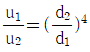
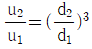
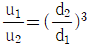
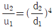
(정답률: 27%)
4. 그림과 같은 빗금 친 단면을 갖는 중공축이 있다. 이 단면의 O점에 관한 극단면 2차모멘트는?
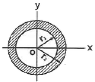
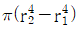
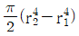
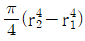
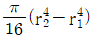
(정답률: 33%)
5. 직사각형 단면의 단주에 150kN 하중이 중심에서 1m만큼 편심되어 작용할 때 이 부재 BD에서 생기는 최대 압축응력은 약 몇 kPa인가?
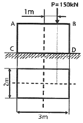
- 25
- 50
- 75
- 100
(정답률: 20%)
6. 원형단면 축에 147kW의 동력을 회전수 2000rpm으로 전달시키고자 한다. 축 지름은 약 몇 cm로 해야 하는가? (단, 허용전단응력은 τω=50MPa이다.)
- 4.2
- 4.6
- 8.5
- 9.9
(정답률: 33%)
7. 단면적이 4cm2인 강봉에 그림과 같은 하중이 작용하고 있다. W=60kN, P=25kN, ℓ=20cm일 때 BC 부분의 변형률 ε은 약 얼마인가? (단, 세로탄성계수는 200GPa이다.)
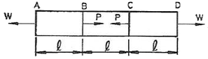
- 0.00043
- 0.0043
- 0.043
- 0.43
(정답률: 26%)
8. 오일러 공식이 세장비
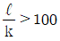
에 대해 성립한다고 할 때, 양단이 힌지인 원형단면에서 오일러 공식이 성립하기 위한 길이 “ℓ”과 지름 “d"와의 관계가 옳은 것은? (단, 단면의 회전반경을 k라 한다.)- ℓ＞4d
- ℓ＞25d
- ℓ＞50d
- ℓ＞100d
(정답률: 31%)
9. 양단이 고정된 축을 그림과 같이 m-n 단면에서 T만큼 비틀면 고정단 AB에서 생기는 저항 비틀림 모멘트의 비 TA/TB는?
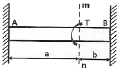
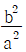
- b/a
- a/b
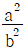
(정답률: 29%)
10. 전체 길이가 L이고, 일단 지지 및 차단 고정보에서 삼각형 분포 하중이 작용할 때, 지지점 A에서의 반력은? (단, 보의 굽힘강성 EI는 일정하다.)
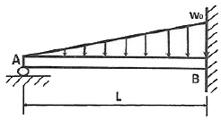
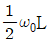
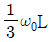
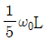
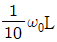
(정답률: 27%)
11. 그림과 같이 트러스 구조물에서 B점에서 10kN의 수직 하중을 받으면 BC에 작용하는 힘은 몇 kN인가?
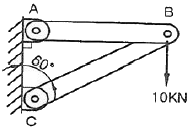
- 20
- 17.32
- 10
- 8.66
(정답률: 31%)
12. 외팔보의 자유단에 연직 방향으로 10kN의 집중 하중이 작용하면 고정단에 생기는 굽힘 응력은 약 몇 MPa인가? (단, 단면(폭×높이) b×h=10cm×15cm, 길이 1.5m이다.)
- 0.9
- 5.3
- 40
- 100
(정답률: 37%)
13. 그림과 같이 길고 얇은 평판이 평면 변형률 상태로 σx를 받고 있을 때 ϵx는?
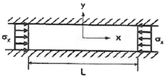
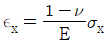
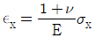
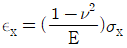
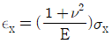
(정답률: 21%)
14. 그림과 같은 균일 단면의 돌출보에서 반력 RA는? (단, 보의 자중은 무시한다.)
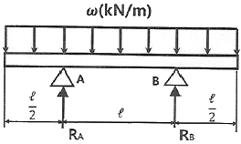
- ωℓ
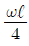
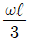
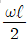
(정답률: 29%)
15. 그림의 평면응력상태에서 최대 주응력은 약 몇 MPa인가? (단, σx=175MPa, σy=35MPa, τxy=60MPa이다.)
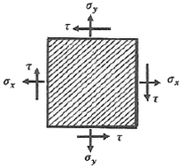
- 92
- 1⑤
- 163
- 197
(정답률: 31%)
16. 그림과 같은 단면을 가진 외팔보가 있다. 그 단면의 자유단에 전단력 V=40kN에 발생한다면 단면 a-b 위에 발생하는 전단응력은 약 몇 MPa인가?
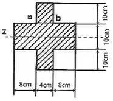
- 4.57
- 4.22
- 3.87
- 3.14
(정답률: 14%)
17. 그림과 같이 양단에서 모멘트가 작용할 경우 A지점의 처짐각 θA는? (단, 보의 굽힘 강성 EI는 일정하고, 자중은 무시한다.)
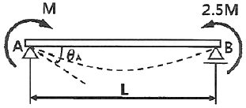
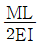
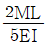
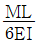
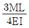
(정답률: 20%)
18. 그림과 같이 외팔보의 중앙에 집중하중 P가 작용하는 경우 집중하중 P가 작용하는 지점에서의 처짐은? (단, 보의 굽힘강성 EI는 일정하고, 자중은 무시한다.)
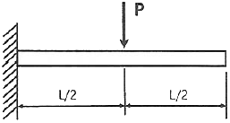
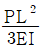
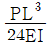
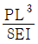
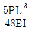
(정답률: 21%)
19. 지름 D인 두께가 얇은 링(ring)을 수평면 내에서 회전시킬 때, 링에 생기는 인장응력을 나타내는 식은? (단, 링의 단위 길이에 대한 무게를 W, 링의 원주속도를 V, 링의 단면적을 A, 중력가속도를 g로 한다.)
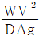
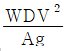
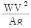
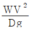
(정답률: 23%)
20. 철도 레일의 온도가 50℃에서 15℃로 떨어졌을 때 레일에 생기는 열응력은 약 몇 MPa인가? (단, 선팽창계수는 0.000012/℃, 세로탄성계수는 210GPa이다.)
- 4.41
- 8.82
- 44.1
- 88.2
(정답률: 35%)
2과목: 기계열역학
21. 단열된 가스터빈의 입구 측에서 압력 2MPa, 온도 1200K인 가스가 유입되어 출구 측에서 압력 100kPa, 온도 600K로 유출된다. 5MW의 출력을 얻기 위해 가스의 질량유량(kg/s)은 얼마이어야 하는가? (단, 터빈의 효율은 100%이고, 가스의 정압비열은 1.12kJ/kgㆍK이다.)
- 6.44
- 7.44
- 8.44
- 9.44
(정답률: 25%)
22. 초기 압력 100kPa, 초기 체적 0.1m3인 기체를 버너로 가열하여 기체 체적이 정압과정으로 0.5m3이 되었다면 이 과정 동안 시스템이 외부에 한 일(kJ)은?
- 10
- 20
- 30
- 40
(정답률: 39%)
23. 펌프를 사용하여 150kPa, 26℃의 물을 가역단열과정으로 650kPa까지 변화시킨 경우, 펌프의 일(kJ/kg)은? (단, 26℃의 포화액의 비체적은 0.001m3/kg이다.)
- 0.4
- 0.5
- 0.6
- 0.7
(정답률: 30%)
24. 1kW의 전기히터를 이용하여 101kPa, 15℃의 공기로 차 있는 100m3의 공간을 난방하려고 한다. 이 공간은 견고하고 밀폐되어 있으며 단열되어 있다. 히터를 10분 동안 작동시킨 경우, 이 공간의 최종온도(℃)는? (단, 공기의 정적비열은 0.718kJ/kgㆍK이고, 기체상수는 0.287kJ/kgㆍK이다.)
- 18.1
- 21.8
- 25.3
- 29.4
(정답률: 25%)
25. 랭킨사이클에서 보일러 입구 엔탈피 192.5kJ/kg, 터빈 입구 엔탈피 3002.5kJ/kg, 응축기 입구 엔탈피 2361.8kJ/kg일 때 열효율(%)은? (단, 펌프의 동력은 무시한다.)
- 20.3
- 22.8
- 25.7
- 29.5
(정답률: 35%)
26. 실린더 내의 공기가 100kPa, 20℃ 상태에서 300kPa이 될 때까지 가역단열 과정으로 압축된다. 이 과정에서 실린더 내의 계에서 엔트로피의 변화(kJ/kgㆍK)는? (단, 공기의 비열비(k)는 1.4이다.)
- -1.35
- 0
- 1.35
- 13.5
(정답률: 35%)
27. 이상기체 1kg을 300K, 100kPa에서 500K까지 “PVn=일정”의 과정(n=1.2)을 따라 변화시켰다. 이 기체의 엔트로피 변화량(kJ/K)은? (단, 기체의 비열비는 1.3, 기체상수는 0.287kJ/kgㆍK이다.)
- -0.244
- -0.287
- -0.344
- -0.373
(정답률: 18%)
28. 열역학적 관점에서 다음 장치들에 대한 설명으로 옳은 것은?
- 노즐은 유체를 서서히 낮은 압력으로 팽창하여 속도를 감속시키는 기구이다.
- 디퓨저는 저속의 유체를 가속하는 기구이며 그 결과 유체의 압력이 증가한다.
- 터빈은 작동유체의 압력을 이용하여 열을 생성하는 회전식 기계이다.
- 압축기의 목적은 외부에서 유입된 동력을 이용하여 유체의 압력을 높이는 것이다.
(정답률: 32%)
29. 열역학 제2법칙에 대한 설명으로 틀린 것은?
- 효율이 100%인 열기관은 얻을 수 없다.
- 제2종의 영구 기관은 작동 물질의 종류에 따라 가능하다.
- 열은 스스로 저온의 물질에서 고온의 물질로 이동하지 않는다.
- 열기관에서 작동 물질이 일을 하게 하려면 그 보다 더 저온인 물질이 필요하다.
(정답률: 30%)
30. 그림과 같은 공기표준 브레이튼(Brayton) 사이클에서 작동유체 1kg당 터빈 일(kJ/kg)은? (단, T1=300K, T2=475.1K, T3=1100K, T4=694.5K이고, 공기의 정압비열과 정적비열은 각각 1.0035kJ/kgㆍK, 0.7162kJ/kgㆍK이다.)
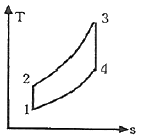
- 290
- 407
- 448
- 627
(정답률: 26%)
31. 다음 중 가장 큰 에너지는?
- 100kW 출력의 엔진이 10시간 동안 한 일
- 발열량 10000kJ/kg의 연료를 100kg 연소시켜 나오는 열량
- 대기압 하에서 10℃의 물 10m3를 90℃로 가열하는데 필요한 열량(단, 물의 비열은 4.2kg/kgㆍK이다.)
- 시속 100km로 주행하는 총 질량 2000kg인 자동차의 운동에너지
(정답률: 28%)
32. 보일러에 온도 40℃, 엔탈피 167kJ/kg인 물이 공급되어 온도 350℃, 엔탈피 3115kJ/kg인 수증기가 발생한다. 입구와 출구에서의 유속은 각각 5m/s, 50m/s이고, 공급되는 물의 양이 2000kg/h일 때, 보일러에 공급해야 할 열량(kW)은? (단, 위치에너지 변화는 무시한다.)
- 631
- 832
- 1237
- 1638
(정답률: 22%)
33. 용기 안에 있는 유체의 초기 내부에너지는 700kJ이다. 냉각과정 동안 250kJ의 열을 잃고, 용기 내에 설치된 회전날개로 유체에 100kJ의 일을 한다. 최종상태의 유체의 내부에너지(kJ)는 얼마인가?
- 350
- 450
- 550
- 650
(정답률: 25%)
34. 다음은 시스템(계)가 경계에 대한 설명이다. 옳은 내용을 모두 고른 것은?
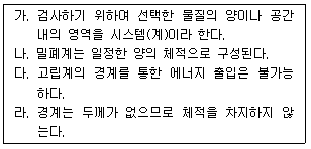
- 가, 다
- 나, 라
- 가, 다, 라
- 가, 나, 다, 라
(정답률: 19%)
35. 피스톤-실린더 장치에 들어있는 100kPa, 27℃의 공기가 600kPa까지 가역단열과정으로 압축된다. 비열비가 1.4로 일정하다면 이 과정 동안에 공기가 받은 일(kJ/kg)은? (단, 공기의 기체상수는 0.287kJ/kgㆍK이다.)
- 263.6
- 171.8
- 143.5
- 116.9
(정답률: 29%)
36. 300L 체적의 진공인 탱크가 25℃, 6MPa의 공기를 공급하는 관에 연결된다. 밸브를 열어 탱크 안의 공기 압력이 5MPa이 될 때까지 공기를 채우고 밸브를 닫았다. 이 과정이 단열이고 운동에너지와 위치에너지의 변화를 무시한다면 탱크 안의 공기의 온도(℃)는 얼마가 되는가? (단, 공기의 비열비는 1.4이다.)
- 1.4
- 25.0
- 84.4
- 144.2
(정답률: 4%)
37. 이상적인 냉동사이클에서 응축기 온도가 30℃, 증발기 온도가 -10℃일 때 성적 계수는?
- 4.6
- 5.2
- 6.6
- 7.5
(정답률: 31%)
38. 준평형 정적과정을 거치는 시스템에 대한 열전달량은? (단, 운동에너지와 위치에너지의 변화는 무시한다.)
- 0이다.
- 이루어진 일량과 같다.
- 엔탈피 변화량과 같다.
- 내부에너지 변화량과 같다.
(정답률: 29%)
39. 압력 1000kPa, 온도 300℃ 상태의 수증기(엔탈피 3⑤1.15 kJ/kg, 엔트로피 7.1228 kJ/kgㆍK)가 증기터빈으로 들어가서 100kPa 상태로 나온다. 터빈의 출력 일이 370kJ/kg일 때 터빈의 효율(%)은?
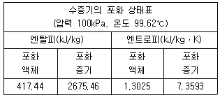
- 15.6
- 33.2
- 66.8
- 79.8
(정답률: 22%)
40. 공기 10kg이 압력 200kPa, 체적 5m3인 상태에서 압력 400kPa, 온도 300℃인 상태로 변한 경우 최종 체적(m3)은 얼마인가? (단, 공기의 기체상수는 0.287kJ/kgㆍK이다.)
- 10.7
- 8.3
- 6.8
- 4.1
(정답률: 33%)
3과목: 기계유체역학
41. 관로의 전 손실수두가 10m인 펌프로부터 21m 지하에 있는 물을 지상 25m의 송출액면에 10m3/min의 유량으로 수송할 때 축동력이 124.5kW이다. 이 펌프의 효율은 약 얼마인가?
- 0.70
- 0.73
- 0.76
- 0.80
(정답률: 30%)
42. 평판 위에 점성, 비압축성 유체가 흐르고 있다. 경계층 두께 δ에 대하여 유체의 속도 u인 분포는 아래와 같다. 이 때 경계층 유동량 두께에 대한 식으로 옳은 것은? (단, U는 상류속도, y는 평판과의 수직거리이다.)
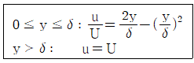
- 0.1δ
- 0.125δ
- 0.133δ
- 0.166δ
(정답률: 15%)
43. 그림과 같이 오일이 흐르는 수평관로 두 지점의 압력차 p1-p2를 측정하기 위하여 오리피스와 수은을 넣은 U자관을 설치하였다. p1-p2로 옳은 것은? (단, 오일의 비중량은 γoil이며, 수은이 비중량은 γHg이다.)
- (y1-y2)(γHg-γoil)
- y2(γHg-γoil)
- y1(γHg-γoil)
- (y1-y2)(γoil-γHg)
(정답률: 25%)
44. 그림과 같이 비중이 1.3인 유체 위에 깊이 1.1m로 물이 채워져 있을 때, 직경 5cm의 탱크 출구로 나오는 유체의 평균 속도는 약 몇 m/s인가? (단, 탱크의 크기는 충분히 크고 마찰손실은 무시한다.)
- 3.9
- 5.1
- 7.2
- 7.7
(정답률: 19%)
45. 그림과 같이 폭이 2m인 수문 ABC가 A점에서 한지로 연결되어 있다. 그림과 같이 수문이 고정될 때 수평인 케이블 CD에 걸리는 장력은 약 몇 kN인가? (단, 수문의 무게는 무시한다.)
- 38.3
- 35.4
- 25.2
- 22.9
(정답률: 11%)
46. 그림과 같이 속도가 V인 유체가 속도 U로 움직이는 곡면에 부딪혀 90°의 각도로 유동방향이 바뀐다. 다음 중 유체가 곡면에 가하는 힘의 수평방향 성분 크기가 가장 큰 것은? (단, 유체의 유동단면적은 일정하다.)
- V=10m/s, U=5m/s
- V=20m/s, U=15m/s
- V=10m/s, U=4m/s
- V=25m/s, U=20m/s
(정답률: 30%)
47. 담배연기가 비정상 유동으로 흐를 때 순간적으로 눈에 보이는 담배연기는 다음 중 어떤 것에 해당하는가?
- 유맥선
- 유적선
- 유선
- 유선, 유적선, 유맥선 모두에 해당됨
(정답률: 33%)
48. 지름이 10cm인 원통에 물이 담겨져 있다. 수직인 중심축에 대하여 300rpm의 속도로 원통을 회전시킬 때 수면의 최고점과 최저점의 수직 높이차는 약 몇 cm인가?
- 0.126
- 4.2
- 8.4
- 12.6
(정답률: 23%)
49. 밀도가 0.84kg/m3이고 압력이 87.6kPa인 이상기체가 있다. 이 이상기체의 절대온도를 2배 증가시킬 때, 이 기체에서의 음속은 약 몇 m/s인가? (단, 비열비는 1.4이다.)
- 280
- 340
- 540
- 720
(정답률: 21%)
50. 모세관을 이용한 점도계에서 원형관 내의 유동은 비압축성 뉴턴 유체의 층류유동으로 가정할 수 있다. 원형관의 입구 측과 출구 측의 압력차를 2배로 늘렸을 때, 동일한 유체의 유량은 몇 배가 되는가?
- 2배
- 4배
- 8배
- 16배
(정답률: 22%)
51. 그림과 같이 날카로운 사각 모서리 입출구를 갖는 관로에서 전수두 H는? (단, 관의 길이를 ℓ, 지름은 d, 관 마찰계수는 f, 속도수두는 이고, 입구 손실계수는 0.5, 손실계수는 1.0이다.)
(정답률: 31%)
52. 길이 150m인 배를 길이 10m인 모형으로 조파 저항에 관한 실험을 하고자 한다. 실형의 배가 70km/h로 움직인다면, 실형과 모형 사이의 역학적 상사를 만족하기 위한 모형의 속도는 약 몇 km/h인가?
- 271
- 56
- 18
- 10
(정답률: 30%)
53. 속도 포텐셜 φ=kθ인 와류 유동이 있다. 중심에서 반지름 r인 원주에 따른 순환(circulation)식으로 옳은 것은? (단, K는 상수이다.)
- 0
- K
- πK
- 2πK
(정답률: 19%)
54. 그림과 같이 평행한 두 원판 사이에 점성계수 μ=0.2Nㆍs/m2인 유체가 채워져 있다. 아래 판은 정지되어 있고, 윗 판은 1800rpm으로 회전할 때 작용하는 돌림힘은 약 몇 Nㆍm인가?
- 9.4
- 38.3
- 46.3
- 59.2
(정답률: 6%)
55. 피에조미터관에 대한 설명으로 틀린 것은?
- 계기유체가 필요 없다.
- U자관에 비해 구조가 단순하다.
- 기체의 압력 측정에 사용할 수 있다.
- 대기압 이상의 압력 측정에 사용할 수 있다.
(정답률: 10%)
56. 지름 100mm 관에 글리세린이 9.42L/min의 유량으로 흐른다. 이 유동은? (단, 글리세린의 비중은 1.26, 점성계수는 μ=2.9×10-4kg/mㆍs이다.)
- 난류유동
- 층류유동
- 천이유동
- 경계층유동
(정답률: 28%)
57. 중력가속도 g, 체적유량 Q, 길이 L로 얻을 수 있는 무차원수는?
(정답률: 32%)
58. 다음 유체역학적 양 중 질량차원을 포함하지 않는 양은 어느 것인가? (단, MLT 기본차원을 기준으로 한다.)
- 압력
- 동점성계수
- 모멘트
- 점성계수
(정답률: 31%)
59. 그림과 같이 물이 유량 Q로 저수조로 들어가고 속도 V=√2gh로 저수조 바닥에 있는 면적 A2의 구멍을 통하여 나간다. 저수조의 구면 높이가 변화하는 속도 는?
(정답률: 20%)
60. 현의 길이가 7m인 날개의 속력이 500km/h로 비행할 때 이 날개가 받는 양력이 4200kN이라고 하면 날개의 폭은 약 몇 m인가? (단, 양력계수 CL=1, 항력계수 CD=0.02, 밀도 ρ=1.2kg/m3이다.)
- 51.84
- 63.17
- 70.99
- 82.36
(정답률: 25%)
4과목: 유체기계 및 유압기기
61. 다음 중 액체에 에너지를 주어 이것을 저압부(낮은 곳)에서 고압부(높은 곳)로 송출하는 기계를 무엇이라고 하는가?
- 수차
- 펌프
- 송풍기
- 컨데이어
(정답률: 66%)
62. 원심펌프의 송출유량이 0.7m3/min이고, 관로의 손실수두가 7m이었다. 이 펌프로 펌프중심에서 1m 아래에 있는 저수조에서 물을 흡입하여 26m의 높이에 있는 송출 탱크 면으로 양수하려고 할 때 이 펌프의 수동력(kW)은?
- 3.9
- 5.1
- 7.4
- 9.6
(정답률: 47%)
63. 풍차에 관한 설명으로 틀린 것은?
- 후단의 방향날개로서 풍차축의 방향조정을 하는 형식을 미국형 풍차라고 한다.
- 보조풍차가 회전하기 시작하여 터빈축의 방향을 바람의 방향에 맞추는 형식을 유럽형 풍차라고 한다.
- 바람의 방향이 바뀌어도 회전수를 일정하게 유지하기 위해서는 깃 각도를 조절하는 방식이 유용하다.
- 풍속을 일정하게 하여 회전수를 줄이면 바람에 대한 영각이 감소하여 흡수동력이 감소한다.
(정답률: 49%)
64. 터보형 유체 전동장치의 장점으로 틀린 것은?
- 구조가 비교적 간단하다.
- 기계를 시동할 때 원동기에 무리가 생기지 않는다.
- 부하토크의 변동에 따라 자동적으로 변속이 이루어진다.
- 출력축의 양방향 회전이 가능하다.
(정답률: 41%)
65. 유효 낙차를 H(m), 유량을 Q(m3/s), 물의 비중량을 γ(kg/m3)라고 할 때 수차의 이론출력 Lth(kW)을 나타내는 식으로 옳은 것은?
- Lth=γQH
- Lth=102γQH
(정답률: 62%)
66. 펌프계에서 발생할 수 있는 수격작용(water hammer)의 방지대책으로 틀린 것은?
- 토출배관은 가능한 적은 구경을 사용한다.
- 펌프에 플라이휠을 설치한다.
- 펌프가 급정지 하지 않도록 한다.
- 토출 관로에 서지탱크 또는 서지밸브를 설치한다.
(정답률: 66%)
67. 펠톤 수차의 니들밸브가 주로 조절하는 것은 무엇인가?
- 노즐에서의 분류 속도
- 분류의 방향
- 유량
- 버킷의 각도
(정답률: 43%)
68. 베인 펌프의 장점으로 틀린 것은? (문제 오류로 가답안 발표시 3번으로 발표되었지만 확정답안 발표시 3, 4번이 정답처리 되었습니다. 여기서는 가답안인 3번을 누르면 정답 처리 됩니다.)
- 송출 압력의 맥동이 거의 없다.
- 깃의 마모에 의한 압력 저하가 일어나지 않는다.
- 펌프의 유동력에 비하여 형상치수가 크다.
- 구성 부품 수가 적고 단순한 형상을 하고 있으므로 고장이 적다.
(정답률: 65%)
69. 펌프를 회전차의 형상에 따라 분류할 때, 다음 펌프의 분류가 다른 하나는?
- 피스톤 펌프
- 플런저 펌프
- 베인 펌프
- 사류 펌프
(정답률: 46%)
70. 프란시스 수차에서 스파이럴(spiral)형에 속하지 않는 것은?
- 횡축 단륜 단사 수차
- 횡축 단륜 복사 수차
- 입축 단륜 단사 수차
- 압축 이륜 단류 수차
(정답률: 38%)
71. 그림의 유압 회로도에서 ①의 밸브 명칭으로 옳은 것은?
- 스톱 밸브
- 릴리프 밸브
- 무부하 밸브
- 카운터 밸런스 밸브
(정답률: 66%)
72. 펌프에 대한 설명으로 틀린 것은?
- 피스톤 펌프는 피스톤을 경사판, 캠, 크랭크 등에 의해서 왕복 운동시켜, 액체를 흡입 쪽에서 토출 쪽으로 밀어내는 형식의 펌프이다.
- 레이디얼 피스톤 펌프는 피스톤의 왕복 운동 방향이 구동축에 거의 직각인 피스톤 펌프이다.
- 기어 펌프는 케이싱 내에 물리는 2개 이상의 기어에 의해 액체를 흡입 쪽에서 토출 쪽으로 밀어내는 형식의 펌프이다.
- 터보 펌프는 덮개차를 케이싱 외에 회전시켜, 액체로부터 운동 에너지를 뺏어 액체를 토출하는 형식의 펌프이다.
(정답률: 53%)
73. 미터 아웃 회로에 대한 설명으로 틀린 것은?
- 피스톤 속도를 제어하는 회로이다.
- 유량 제어 밸브를 실린더의 입구측에 설치한 회로이다.
- 기본형은 부하변동이 심한 공작기계의 이송에 사용된다.
- 실린더에 배압이 걸리므로 끌어당기는 하중이 작용해도 자주 할 염려가 없다.
(정답률: 62%)
74. 압력 제어 밸브의 종류가 아닌 것은?
- 체크 밸브
- 감압 밸브
- 릴리프 밸브
- 카운터 밸런스 밸브
(정답률: 67%)
75. 유압유의 구비조건으로 적절하지 않은 것은?
- 압축성이어야 한다.
- 점도 지수가 커야한다.
- 열을 방출시킬 수 있어야 한다.
- 기름중의 공기를 분리시킬 수 있어야 한다.
(정답률: 61%)
76. 유압 실린더 취급 및 설계 시 주의사항으로 적절하지 않은 것은?
- 적당한 위치에 공기구멍을 장치한다.
- 쿠션 장치인 쿠션 밸브는 감속범위의 조정으로 사용된다.
- 쿠션 장치인 쿠션링은 헤드 엔드축에 흐르는 오일을 촉진한다.
- 원칙적으로 더스트 와이퍼를 연결해야 한다.
(정답률: 52%)
77. 유체 토크 컨버터의 주요 구성 요소가 아닌 것은?
- 펌프
- 터빈
- 스테이터
- 릴리프 밸브
(정답률: 56%)
78. 유압 장치의 특징으로 적절하지 않은 것은?
- 원격 제어가 가능하다.
- 소형 장치로 큰 출력을 얻을 수 있다.
- 먼지나 이물질에 의한 고장의 우려가 없다.
- 오일에 기포가 섞여 작동이 불량할 수 있다.
(정답률: 64%)
79. 그림과 같은 유압 기호의 명칭은?
- 경음기
- 소음기
- 리밋 스위치
- 아날로그 변환기
(정답률: 43%)
80. 채터링 현상에 대한 설명으로 적절하지 않은 것은?
- 소음을 수반한다.
- 일종의 자려 진동현상이다.
- 감압 밸브, 릴리프 밸브 등에서 발생한다.
- 압력, 속도 변화에 의한 것이 아닌 스프링의 강성에 의한 것이다.
(정답률: 65%)
5과목: 건설기계일반 및 플랜트배관
81. 오스테나이트계 스테인리스강의 설명으로 틀린 것은?
- 18-8 스테인리스강으로 통용된다.
- 비자성체이며 열처리하여도 경화되지 않는다.
- 저온에서는 취성이 크며 크리프강도가 낮다.
- 인장강도에 비하여 낮은 내력을 가지며, 가공 경화성이 높다.
(정답률: 49%)
82. 굴삭기의 3대 주요 구성요소가 아닌 것은?
- 작업장치
- 상부 회전체
- 중간 선회체
- 하부 구동체
(정답률: 48%)
83. 타이어식 굴삭기와 무한궤도식 굴삭기를 비교할 때, 타이어식 굴삭기의 특징으로 틀린 것은?
- 기동성이 나쁘다.
- 견인력이 약하다.
- 습지, 사지, 활지의 운행이 곤란하다.
- 암석지에서 작업 시 타이어가 손상되기 쉽다.
(정답률: 54%)
84. 덤프트럭의 축간거리가 1.2.m인 차를 왼쪽으로 완전히 꺾을 때 오른쪽 바퀴의 각도가 45°이고, 왼쪽바퀴의 각도가 30°일 때, 이 덤프트럭의 최소 회전 반경은 약 몇 m인가? (단, 킹핀과 타이어 중심간의 거리는 무시한다.)
- 1.7
- 3.4
- 5.4
- 7.8
(정답률: 26%)
85. 수중의 토사, 암반 등을 파내는 건설기계로 항만, 항로, 선착장 등의 축항 및 기초공사에 사용되는 것은?
- 준설선
- 소새석기
- 노상 안정기
- 스크레이퍼
(정답률: 49%)
86. 조향장치에서 조향력을 바퀴에 전달하는 부품 중에 바퀴의 토(toe) 값을 조정할 수 있는 것은?
- 피트먼 암
- 너클 암
- 드래그 링크
- 타이로드
(정답률: 14%)
87. 표준 버킷용량(m3)으로 규격을 나타내는 건설기계는?
- 모터 그레이더
- 기중기
- 지게차
- 로더
(정답률: 40%)
88. 쇄석기의 종류 중 임팩트 크러셔의 규격은?
- 시간당 쇄석능력 (ton/h)
- 시간당 이동거리(km/h)
- 롤의 지름(mm)×길이(mm)
- 쇄석 판의 폭(mm)×길이(mm)
(정답률: 50%)
89. 아스팔트 피니셔의 각 부속장치에 대한 설명으로 틀린 것은?
- 리시빙 호퍼:운반된 혼합재(아스팔트)를 저장하는 용기이다.
- 피더:노면에 살포된 혼합재를 매끈하게 다듬는 판이다.
- 스프레이팅 스쿠루:스크리드에 설치되어 혼합재를 균일하게 살포하는 장치이다.
- 댐퍼:스크리드 앞쪽에 설치되어 노면에 살포된 혼합째를 요구되는 두께로 다져주는 장치이다.
(정답률: 38%)
90. 플랜트 배관설비에서 열응력이 주요 요인이 되는 경우의 파이프 래크상의 배관 배치에 관한 설명으로 틀린 것은?
- 루프형 신축 곡관을 많이 사용한다.
- 온도가 높은 배관일수록 내측(안쪽)에 배치한다.
- 관 지름이 큰 것일수록 외측(바깥쪽)에 배치한다.
- 루프형 신축 곡관은 파이프 래크상의 다른 배관보다 높게 배치한다.
(정답률: 46%)
91. 배관 지지장치인 브레이스에 대한 설명으로 적절하지 않은 것은?
- 방진 효과를 높이려면 스프링 정수를 낮춰야 한다.
- 진동을 억제하는데 사용되는 지지장치이다.
- 완충기는 수격작용, 안전밸브의 반력 등의 충격을 완화하여 준다.
- 유압식은 구조상 배관의 이동에 대하여 저항이 없고 방진효과도 크므로 규모가 큰 배관에 많이 사용한다.
(정답률: 48%)
92. 감압밸브 설치 시 주의사항으로 적절하지 않은 것은?
- 감압밸브는 수평배관에 수평으로 설치하여야 한다.
- 배관의 열응력이 직접 감압 밸브에 가해지지 않도록 전후 배관에 고정이나 지지를 한다.
- 감압밸브에 드레인이 들어오지 않는 배관 또는 드레인 빼기를 행하여 설치해야 한다.
- 감압밸브의 전후에 압력계를 설치하고 입구측에는 글로브 밸브를 설치한다.
(정답률: 36%)
93. 물의 비중량이 9810N/m3이며, 500kPa의 압력이 작용할 때 압력수두는 약 몇 m인가?
- 1.962
- 19.62
- 5.097
- 50.97
(정답률: 49%)
94. 빙점(0℃) 이하의 낮은 온도에 사용하며 저온에서도 인성이 감소되지 않아 각종 화학공업, LPG, LNG 탱크 배관에 적합한 배관용 강관은?
- 배관용 탄소강관
- 저온 배관용 강관
- 압력배관용 강관
- 고온배관용 강관
(정답률: 54%)
95. KS 규격에 따른 고압 배관용 탄소강관의 기호로 옳은 것은?
- SPHL
- SPHT
- SPPH
- SPPS
(정답률: 47%)
96. 호브 식 나사절삭기에 대한 설명으로 적절하지 않은 것은?
- 나사절삭 전용 기계로서 호브를 저속으로 회전시키면서 나사절삭을 한다.
- 관은 어미나사와 척의 연결에 의해 1회전 할 때 마다 1피치 만큼 이동하여 나사가 절삭된다.
- 이 기계에 호브와 파이프 커터를 함께 장착하면 관의 나살절삭과 절단을 동시에 할 수 있다.
- 관의 절단, 나사절삭, 거스러미제거 등의 일을 연속적으로 할 수 있기 때문에 현장에서 가장 많이 사용한다.
(정답률: 36%)
97. 일반적으로 배관의 위치를 결정할 때 기능, 시공, 유지관리의 관점에서 적절하지 않은 것은?
- 급수배관은 아래쪽으로 배관해야 한다.
- 전기배선, 덕트 및 연도 등은 위쪽에 설치한다.
- 자연중령식 배관은 배관구배를 엄격히 지켜야 하며 굽힘부를 적게 하여야 한다.
- 파손 등에 의해 누수가 염려되는 배관에 위치는 위쪽으로 하는 것이 유지관리상 편리하다.
(정답률: 53%)
98. 관 절단 후 관 단면의 안쪽에 생기는 거스러미(쇳밥)를 제거하는 공구는?
- 파이프 커터
- 파이프 리머
- 파이프 렌치
- 바이스
(정답률: 54%)
99. 배관의 부식 및 마모 등으로 작은 구멍이 생겨 유체가 누설될 경우에 다른 방법으로는 누설을 막기가 곤란할 때 사용하는 응급 조치법은?
- 하트태핑법
- 인젝션법
- 박스 설치법
- 스토핑 박스법
(정답률: 37%)
100. 평면상의 변위 뿐 아니라 입체적인 변위까지 안전하게 흡수하므로 어떠한 형상에 의한 신축에도 배관이 안전하며 설치 공간이 적은 신축이음의 형태는?
- 슬리브형
- 벨로즈형
- 스위블형
- 볼조인트형
(정답률: 42%)
σ = M / W
여기서, σ는 굽힘 응력, M은 굽힘 모멘트, W는 단면계수이다.
이 문제에서 굽힘 응력은 100MPa이고, 단면계수는 원형 단면의 경우 W = πD^3 / 32 이다. 여기서 D는 지름이다.
따라서, M = σW = 100 × π × 300^3 / 32 × 10^6 = 265.⑤ kNㆍm
따라서, 정답은 "265"이다.